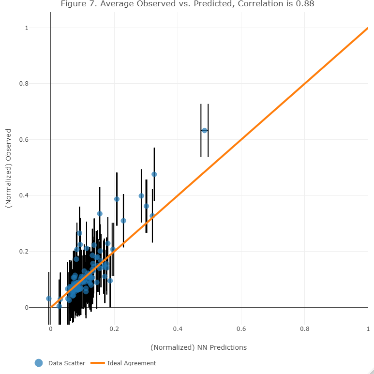
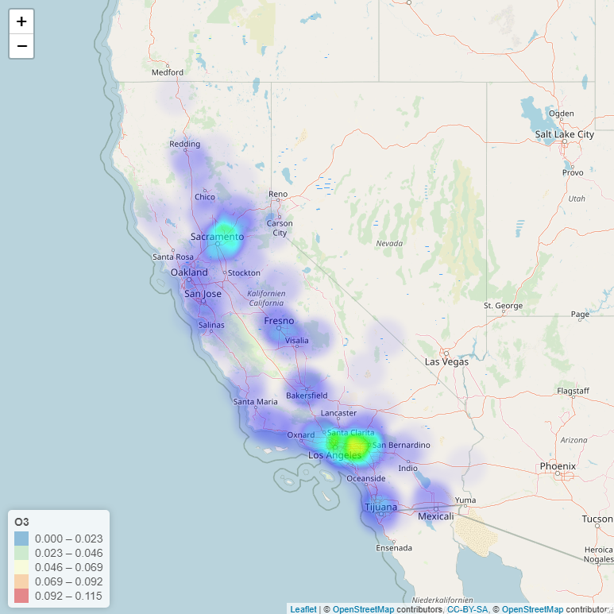
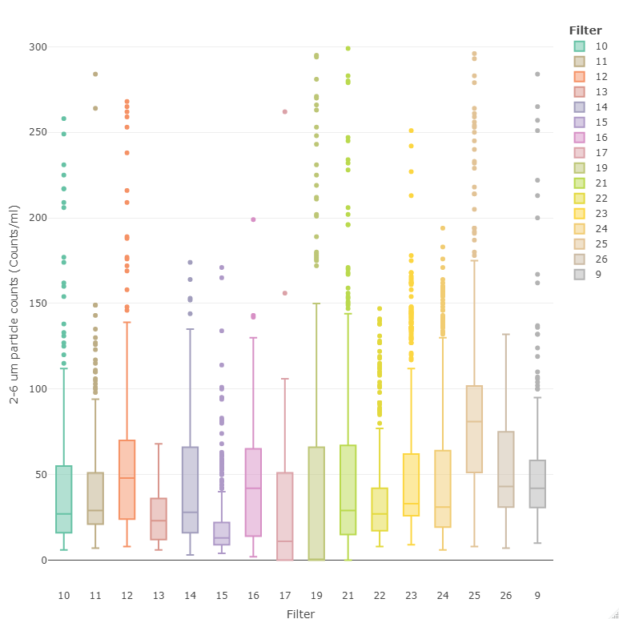

Projects
Resume
About
Hi, my name is Tarrik.
I'm an Environmental Engineer using data science to answer complex questions related to human health and the environment.
Lake Erie harmful algal bloom prediction

Predicting the mass concentration of cyanobacteria in Lake Erie by training a deep learning neural network using water quality parameters.
View full project
California ground-level ozone prediction model

Predicting ground-level ozone concentration using available air pollutant data from stations throughout California using XGboost.
View full project
Cryptosporidium oocyst sized particle analysis

Optimizing treatment plant chemical dosing operations through use of data pipelines, visualizations, and interactive web-apps.
View full project